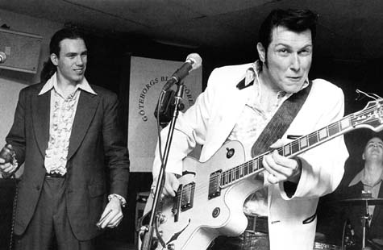
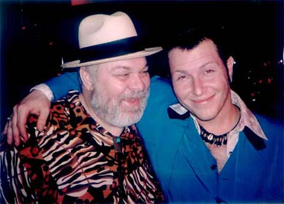
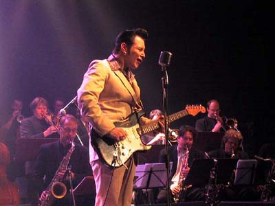
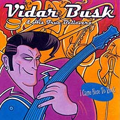
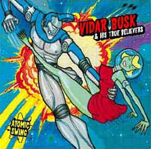

«Герой нашего времени»
Сидеть и скучать, чего-то ждать от жизни - это глупо.
Нужно обязательно показать людям, кто ты есть.
Видар Бюск

Очень хочется поведать историю об одном потрясающем музыканте, который, несмотря
на возраст, уже прошел «огонь, воду и медные трубы» и стал весьма уважаемой
персоной в серьезном мире блюза. У него каждый раз новый имидж, новые идеи, но
есть и вечные атрибуты: естественно, гитара и сигарета. Всегда с сигаретой и с
крепким словцом на языке. Впрочем, он никогда не лез за словом в карман. А еще -
очень хитрый взгляд, и никогда не знаешь, что он скажет в следующую минуту.
В то время, когда его имя - Видар Бюск - знают по обе стороны Атлантики, до
России долетают лишь отголоски информации о нем, поэтому позвольте мне исправить
эту ошибку.
Все начиналось просто: 19 мая 1970 года в небольшом норвежском городке
Порсгрунн, что к юго-западу от Осло, родился мальчик Видар Бюск. Рос он в другом
городе под названием Лангесунд.
А дальше следуют совершенно невероятные вещи, но, поверьте, все это правда.
Сначала, услышав его рассказ, я не поверила, но люди рядом со мной, подтвердили,
что это так. Это уникальный человек.
Итак, Видару было 8 лет, когда он работал в гостинице, выполняя различные мелкие
поручения. На заработанные деньги он купил альбом Pink Floyd «The Wall», который
произвел на него грандиозное, неизгладимое впечатление. Это было первое
прикосновение к музыке.
Играть на гитаре Бюск начал в 13 лет. Как он сам теперь вспоминает: «Было легко
учиться, с гитарой сразу возникло взаимопонимание». Он осваивал различные
музыкальные приемы, что называется, быстро и безболезненно. Впоследствии он
пришел к выводу, что «обучиться игре на гитаре легко. Необходимы только стойка в
баре и оборудование в углу. А гитара выглядит и звучит так, как хочет это
выразить человек».
Первое, что начал играть Видар - рок-н-ролл а-ля Чак Берри. Позже он впечатлился
Джими Хендриксом. А в 15-16 лет увлечением Бюска были уже Muddy Waters и блюзы
во всех своих проявлениях. В школе им была организована группа Stay Free,
которая старательно воспроизводила манеру игры Джими Хендрикса, к головной боли
всех учителей.
Играть музыку Видар начал на бас-гитаре. А первой его шестиструнной гитарой был
полуакустический Ibanez. Под впечатлением от блюза в исполнении Jimmy Vaughan,
The Fabulous Thunderbirds, Stevie Ray Vaughan и Ronnie Earl, Видар решил
полностью посвятить себя музыке.
В то время на Бюска также произвели впечатление различные музыканты: Tottas
Bluesband и Sven Zetterberg из Швеции, Peter Green и Stan Webb из Британии и
многие другие.

Официальная музыкальная карьера Бюска началась в 1986 году, когда на очередном
музыкальном фестивале в Lunde в Телемарке (южная Норвегия) на Бюска наткнулась
американская блюзовая группа во главе с гармонистом по прозвищу Rock Bottom.
Музыканты группы были наслышаны о музыкальных талантах этого молодого человека и
хотели послушать его игру на гитаре, поскольку повсюду уже ходили легенды о
молодом норвежце. К тому времени Бюску стало тесно в маленьком Лангесунде, где
он жил, поэтому он путешествовал по всей Норвегии, играя на разных фестивалях.
И хотя Видар практически не говорил по-английски, их встреча состоялась. Он
настолько впечатлил музыкантов группы Rock Bottom’а, что они пригласили
поучаствовать его в их туре The Cutaways по Норвегии вместо гитариста Zarasota
Slim, который побоялся ехать в Норвегию, сославшись на повышенный радиационный
фон. Как вы помните, в 1986 году произошла авария на Чернобыльской АЭС.
В Штаты Rock Bottom & Co вернулись вместе с Бюском, утвердив его как постоянного
гитариста группы и оставив в Норвегии его растерянных родителей и школьных
учителей. Бюску было 16 лет.
… По собственному признанию Бюска, с 16 до 20 лет он чувствовал себя как в кино
- настолько все было хорошо. Он учился английскому и набирался гитарного опыта в
свое удовольствие. Жизнь была прекрасна и бесконтрольна.
Там, где он жил, не было телевизора, но зато был проигрыватель и огромная
коллекция пластинок с блюзами. В свободное время он прослушал их бесчисленное
количество раз. За 4 года пребывания в Америке Видар переслушал и переиграл на
концертах практически все, что имело хоть какое-нибудь отношение к блюзу.
Кроме того, Видар продолжал осваивать гитару, совершенствуясь и понемногу
становясь профессионалом. Он пришел к выводу, что «на практике важно, как ты
двигаешься на сцене, как играешь, поешь, как ты одет. Из всего этого формируется
образ. Люди ждут действия, и ты подыгрываешь им. Ты как серфингист, потому что
не знаешь, куда занесут тебя волны. И искусство заключается в том, чтобы
удержаться на волне».

По тем временам для Норвегии было неприлично импровизировать на сцене, играя на
гитаре. Нужно было стоять по стойке «смирно» перед микрофоном. Все остальное
рассматривалось как вызов морали христианского общества. В Америке же Бюск
открыл для себя, что можно играть на гитаре держа ее над собой или же в
каком-нибудь другом положении, можно бегать или прыгать по сцене, и публике это
действительно нравилось. Свободная манера поведения на концерте просто
очаровывала его. И он мгновенно перенял ее для себя.
Кроме того, Бюск не боялся вплетать в привычные всем мелодии совершенно
неожиданные музыкальные лады, умопомрачительные гитарные проигрыши, добавлял
бодрые рокабильные приемы в блюзовые соло, и все, что заставляло сильнее биться
сердца блюзоманов.
Видар и по сей день играет так, прекрасно слыша музыку. И всегда делает это с
улыбкой, никуда не торопясь, сопровождая музыкальными шутками, о которых нельзя
сказать иначе, кроме как: «он начал бюсковать». Ему прощаются все смешения
музыкальных стилей, потому что это выглядит настолько гармонично и уместно, что
все аргументы «против» отпадают сами собой. Совсем недавно в Норвегии был
выпущен специальный DVD-учебник «Учитесь блюзу с Видаром Бюском». Здесь можно
увидеть и услышать несколько его лекций, посвященных исполнению блюза на гитаре.
И несмотря на то, что Бюск преподает блюз «в классической манере», в его соло
периодически проявляется то, что отличает Бюска от других музыкантов.
На концертах Видар может и похулиганить. Но это «хулиганство» будет очень
профессиональным. Сначала он озадачит своих слушателей, а потом вернется к тому,
с чего начинал, и посмеется в свое удовольствие, глядя на озадаченные лица в
зале.
Итак, все было прекрасно в жизни Видара Бюска до 1990 года. Но Бюск не был бы
Бюском, если бы не «влип в историю». «Историю» с большой буквы.
Где-то на бескрайних просторах американских дорог в один прекрасный день 1990-го
года его поймала банальная полиция и депортировала на историческую родину. То
есть, в Норвегию.
Какова была причина? Перечисляю по пальцам: нарушение государственной границы и
нелегальный въезд в Соединенные Штаты Америки, а также отсутствие лицензии на
работу как иностранца. Кроме того, он был несовершеннолетним и работал в
неположенных по закону местах. Весьма лихо для 16-тилетнего подростка, который
успешно скрывался от закона в течение 4-х лет.
Основная «база» группы находилась в St.Petersburg недалеко от Tampa во Флориде.
Но очень часто и много они ездили по «дикому Югу»: Джорджия, Луизианна, Южная и
Северная Каролина. Будучи в различных турне, Rock Bottom и его группа часто
играли в ночных клубах со строгими правилами, где поздним вечером лицам младше
21 года вход был запрещен так же, как и продажа алкогольных напитков, не говоря
уж и о том, чтобы там работать. Но Видар всегда находил выход из положения. Были
случаи (например, в штате Джорджия, как он вспоминает сейчас со смехом), когда
он подрисовывал себе усы, зачесывал волосы назад, отращивал баки и одевался в
костюм, чтобы выглядеть старше. Все эти перипетии описаны в одной из песен под
названием The ballad of Vidar Busk (в исполнении Rock Bottom’а!) и в комиксах на
обложке его второго компакта.
Несмотря на печально и неожиданно закончившуюся одиссею по Америке, Бюск
вернулся на свою родину очень довольный и гордый с намерением показать старой
доброй Норвегии, что такое настоящий блюз и рок-н-ролл.
Если сказать, что у него получилось, то это означает: не сказать ничего.
Вернувшись в Норвегию, Видар Бюск принялся активно продолжать свою творческую
деятельность, которой, естественно, шокировал местную общественность. О нем
заговорили, настолько он был необычен и, можно сказать, юн для игры на столь
высоком уровне. Ему было только 20 лет. На протяжении какого-то времени он играл
рок в байкерском клубе Heavy Horses.
Популярность росла. Известнейшие музыканты Норвегии приглашали к себе играть на
одной сцене талантливого «мальчика из Лангесунда». Спустя время Бюска пригласил
поработать вместе Kåre Virud из группы Chicago Bound.
В апреле 1991 г. он участвовал в записи одноименного альбома трио
Danko/Fjeld/Andersen, сыграв на гитаре. А сама международная «команда» была
номинирована за этот альбом и получила премию Spellmannprisen от Норвежской
музыкальной академии.
Потом поступило предложение от Jaybirds (Jørn Bonne, Eirik Sandnes, Audun
Erlien, Rune Arnesen) и Sugar Daddys (Carsten Loly, Eirik Sandnes, Audun Erlien,
Hamlet Peredsen).
Во время различных студийных и концертных проектов судьба свела Видара с очень
популярным норвежским музыкантом Jørn Hoel. Они проработали вместе три года.
В 1996 г. Бюск участвовал в своем первом Notodden Bluesfestival, после которого
посетил джем в Oslo Bluesklubb. Lucky Peterson, с которым Бюск был знаком по
концертам в Санкт-Петербурге (Флорида), заметил Видара в толпе и вытащил его на
сцену, дал гитару и сказал: «Выходи и играй! Мы должны услышать это!». И Бюск
сорвал оглушительные аплодисменты, полностью переключив внимание публики на
себя.
Но, естественно, Видару уже хотелось организовать свою группу, записать свой
альбом и создать свой собственный стиль. Он начал поиски музыкантов. Первым,
кого Бюск «приглядел» для своей группы, был гитарист Johnny Augland, который
играл до этого в группе Good Time Charlie. Он показался ему своего рода лучшим
специалистом в традиционном блюзе среди норвежских музыкантов.
Затем «нашлись» Rune Endal (bass-guitar), Arne Fjeld Rasmussen (губная
гармоника) и Martin Windstad (ударные). Все они были знакомы друг с другом по
различным блюзовым тусовкам в Oslo Bluesklubb All Stars, частенько играя вместе
на джемах.
 В марте 1997 г. Rock Bottom выпустил свой двойной альбом «Too many bad habits»,
где гитарную партию исполнил Бюск. Тогда же и там же (во Флориде) был записан
первый альбом Видара Бюска - Stompin’ Our Feet With Joy - уже с его собственной
группой His True Believers из трех человек, игравших на контрабасе, гармонике и
ударных. В это время Видара увлекли 50-е. И он пытался примерить к себе образ
а-ля Элвис. Хотя к Элвису Пресли то, что они играли, особого отношения не имело,
разве что некоторая особенность гитарного стиля Бюска и его внешний вид - этакий
рокабильный человек, с коком на голове и в блестящем пиджаке.
В марте 1997 г. Rock Bottom выпустил свой двойной альбом «Too many bad habits»,
где гитарную партию исполнил Бюск. Тогда же и там же (во Флориде) был записан
первый альбом Видара Бюска - Stompin’ Our Feet With Joy - уже с его собственной
группой His True Believers из трех человек, игравших на контрабасе, гармонике и
ударных. В это время Видара увлекли 50-е. И он пытался примерить к себе образ
а-ля Элвис. Хотя к Элвису Пресли то, что они играли, особого отношения не имело,
разве что некоторая особенность гитарного стиля Бюска и его внешний вид - этакий
рокабильный человек, с коком на голове и в блестящем пиджаке.

После первого сразу же последовал второй альбом - I Came Here To Rock - в 1998
году - содержавший композиции разных стилей: блюз, соул, бибоп, джаз, рокабили,
свинг и элементы современного чикагского блюзового и нью-орлеанского стилей.
Музыка местами вообще не вмещалась в рамки ритм-энд-блюзового формата. «Я хотел
встряхнуть всех ото сна!» - коротко объяснил позже Бюск.
В том же 1998 году на 11-м Международном блюз-фестивале в Норвегии в Нотоддоне,
Бюск потряс всех, кого только было можно, несмотря на то, что кроме него там
присутствовало огромное количество известнейших блюзовых музыкантов (The Blues
Brothers Band, The Fabulous Thunderbirds, Bo Didley, Kim Wilson, James Cotton,
Pinetop Perkins, Bob Margolin и др).
И в конце этого же счастливого года Бюск получил премию от Норвежской
музыкальной Академии как Музыкант года за достижения в норвежской pop- &
rock-музыке. В Норвегии впервые за 30 лет эту премию получил блюзовый музыкант.
Получил совершенно неожиданно, потому что даже не знал, что номинировался, и
думал, что его пригласили поиграть на церемонии. Он до сих пор воспринимает эту
премию как кредит доверия и продолжает работать, работать и работать.

В 1999 году вышел третий альбом Atomic Swing, записанный с большим оркестром в
40 человек. Альбом аранжирован и оформлен в едином ретро-стиле, и
преимущественно содержит композиции в стиле свинга, блюза и рок-н-ролла.
Слушателям предстает шикарно-заводная история о космической одиссее в недалекое
будущее, а тексты песен откровенно пародируют научно-фантастические и
полицейские сериалы.
Также в 1999 г. Бюск со своей группой поучаствовал в Kongsberg Jazz Festival.
В 2000-м году в Норвегии к Рождеству готовился выпуск благотворительного
альбома. Сбор от его продажи планировался для передачи христианской организации
Армия Спасения. В записи принимали участие многие известные музыканты Норвегии.
Норвежский продюсер и просто друг Видара - Anders Engen - позвонил ему и
предложил заглянуть в студию, просто поиграть и подурачиться. В студии он
показал Видару песню под названием Perleporten (Райские врата), написанную аж в
1917 году на религиозную, естественно, тему. Бюск «подурачился», оттянувшись на
гитаре. Песня и её аранжировка, возникли сами по себе. Но, как показало время,
это оказалась самая лучшая песня со всего альбома, и весь альбом получил именно
это название - Perleporten. Позже Бюск признался: «До этого момента я еще
никогда в жизни не пел песен об Иисусе».
Бюск много гастролирует, выступая в клубах в разных точках мира, и даже
умудрился принять участие в записи одного из альбомов Рэя Чарльза. Бюск считает,
что «жизнь - это турне и музыка должна быть на сцене, а не в студии». А на
вопрос «где ты живешь?» - он отвечает: «немного здесь, немного там».
Позже Видар вернулся в Америку. Он не мог не вернуться. Хотя бы для того, чтобы
вдохновиться новыми идеями на родине блюза. А еще, потому что нашел за океаном,
через Атлантику, свою «планету» под названием Венера в штате Техас.
Своим последним альбомом под названием Venus, Texas (2001) Видар провел
параллель со всем известным фильмом «Париж, Техас». Альбом посвящен Johnny
Watson, и это новая глава в его творчестве. Накануне Бюск признался: «Теперь я
повзрослел, но гитара - это моя бабушка. И это навсегда».
Он молод, талантлив и дерзок. Его гитара всегда рядом, и когда он берет ее в
руки, все остальное перестает существовать…
Светлана Фунтусова
http://www.norge.ru
VIDAR BUSK